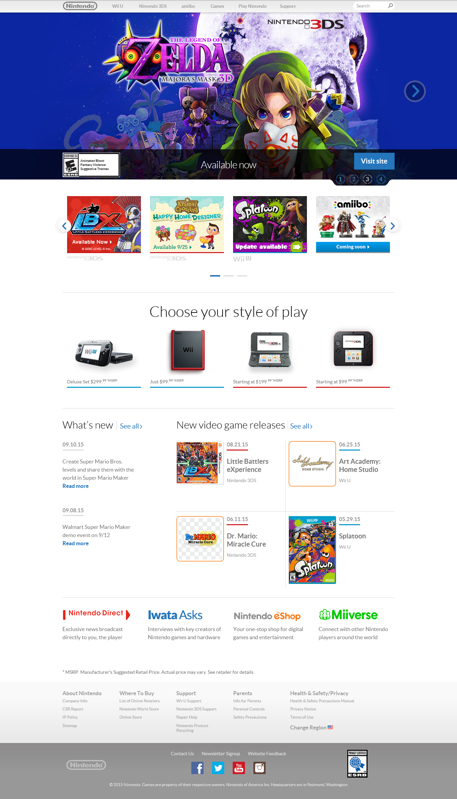
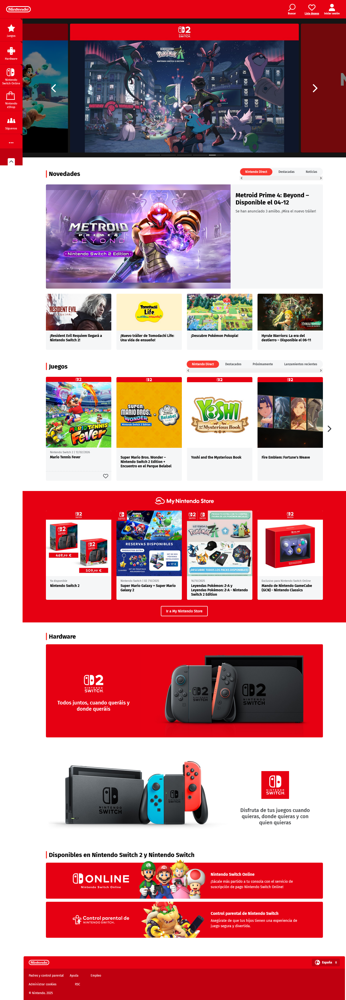

Actividad 1 - Nintendo
Enlace a la web de nintendo del 11/Septiembre/2015 Enlace a la web actual de nintendo

- En la página antigua, los colores son más apagados mientras que los colores en la web moderna tiene colores más vivos lo que permite atraer con mayor facilidad la atención de los niños.
- En la página antigua se muestra la ausencia de una paleta de colores y los colores que usa no tiene sentido de manera global (y puede causar confusión), mientras que en la moderna se usa una paleta monocromática del color rojo aprovechandose del color blanco.
- El menu es más accesible en la moderna ya que permite tener acceso a más elementos del menu a medida que se va navegando en la web
- Los apartados se dividen visualmente a través del uso de los colores principalmente del color blanco y rojo en la web moderna, en vez de usar lineas como en la antigua.
- Hay una mejor agrupación de los productos (divididos en apartados), no como en la antigua que los aglutina
- Los menus en la moderna están más trabajados ya que son un desplegable
- La discriminación de los productos según la consola es más sencilla en la moderna ya que hace uso de los logos en vez usar letras que se ven apagadas